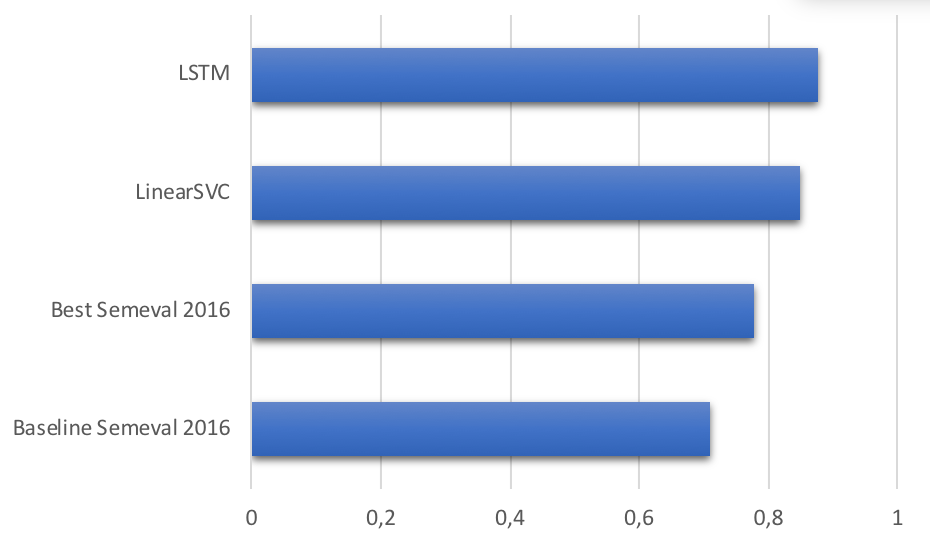

<h5 style="padding-bottom: 0px; margin-bottom: 0px;">Результаты исследований: определение тональности</h5>
<!---->
<canvas data-chart="horizontalBar">
Accuracy, 0.71, 0.77923, 0.7824, 0.820451843
<!--
{
 "data" : {
  "labels" : ["Baseline Semeval 2016", "Best Semeval 2016", "MultinomialNB", "LSTM"],
  "datasets" : [{ "backgroundColor": "#3366CC" }]
 },
 "options": {"responsive": true, "legend": {"display": false}, "scales": {"xAxes": [{"scaleLabel": {"display": true,"labelString": "Accuracy", "fontSize": 18}}]}}
}
-->
</canvas>